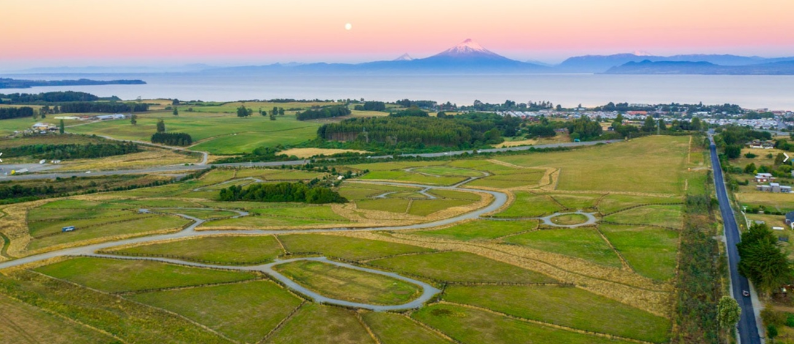

Proyección Inmobiliaria · Sur de Chile
Alianzas comerciales con corredoras
Llevamos compradores informados a su portafolio —sin competir por el mismo rol.
La oportunidad
El cliente que hoy no confía en el corretaje tradicional
Cada vez más compradores en el sur buscan terreno con criterio —y desconfían de quien «solo quiere vender».
- 01Investiga solo, compara portales y llega con dudas sobre normativa, precio y vocación del terreno.
- 02Es un cliente más exigente: quiere análisis, no solo una visita y una oferta.
- 03Muchas veces no contacta a la corredora directamente —o abandona el proceso.
- 04Ese perfil es exactamente el que Land Advisors ya atiende cada semana.
Quiénes somos
Consultora inmobiliaria —no corredora, no portafolio propio
Land Advisors no lista propiedades como actividad principal. Ayudamos al comprador a tomar una mejor decisión con conocimiento territorial y de mercado.
- ✓No vendemos «nuestros» terrenos: recomendamos el óptimo dentro de varios portafolios.
- ✓Análisis de normativa, conectividad, plusvalía, habilitación y precio justo.
- ✓Posición frente al cliente que elimina el conflicto de interés del corretaje tradicional.

Nuestro valor
Análisis profundo · recomendación imparcial
El comprador nos paga por orientación y acompañamiento. Ustedes mantienen la relación con el propietario y la gestión del activo.
Lo que ve el comprador
Un asesor que filtra, compara y explica —no un vendedor con stock propio.
Lo que obtiene la corredora
Un comprador calificado, informado y con intención real —derivado a su propiedad cuando encaja.
Modelo de alianza
Comisión en modalidad canje
Sin doble cobro al mismo actor
Land Advisors no compite por la comisión del vendedor. Ustedes no compiten por la del comprador. Cada uno cobra a quien representa.
Cómo trabajamos juntos
Flujo de la alianza
Qué aporta cada parte
Colaboración clara
Land Advisors aporta
- Compradores calificados y más exigentes
- Diagnóstico, búsqueda y asesoría de compra
- Informe comparativo y análisis territorial
- Acompañamiento al comprador hasta la decisión
La corredora aporta
- Acceso a propiedades y relación con propietarios
- Gestión comercial del activo
- Coordinación de visitas y negociación con el vendedor
- Documentación y cierre del lado del propietario
Beneficios para la corredora
Por qué aliarse con nosotros
- +Nuevo canal de compradores que hoy no llegan por el canal tradicional.
- +Sin conflicto de posicionamiento: no somos su competencia en el portafolio.
- +Cliente preparado llega con criterio y mayor probabilidad de cierre.
- +Sus propiedades compiten en mérito —no por presión comercial.
- +Comisión del propietario se mantiene en su esquema habitual.
Conversemos una alianza
Agendemos una reunión para definir zonas, portafolio y condiciones de canje.
+56 9 7453 3265 · www.landadvisors.cl
José Hernán Katz C. · Land Advisors Chile